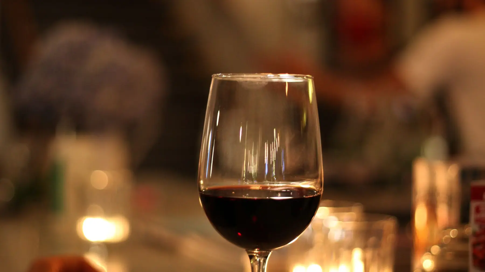
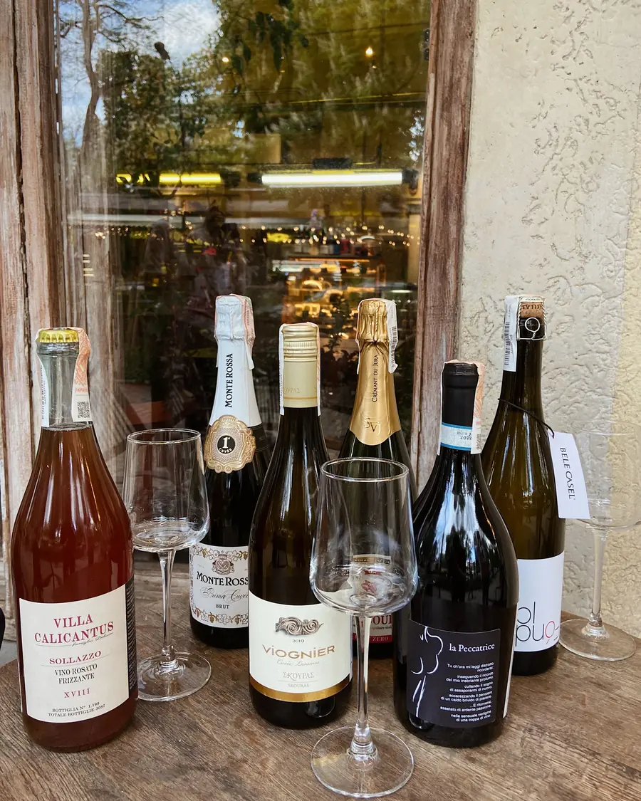

Strada Covaci 9, in the old town. From five in the evening.
Romanian wine from people who make very little of it.

By the glass this week
Eight bottles open, changed every Tuesday. Tap one for what it tastes like.
Fetească Albă, unfilteredDealu Mare, 202332
Green apple and a little salt. Light, dry, the one to start with.
Grasă de Cotnari, skin contactCotnari, 202238
Two weeks on the skins, so it comes out amber. Apricot, black tea, grippy finish.
Tămâioasă Românească, dryDrăgășani, 202334
Smells sweet and isn't. Rose petals, lime, a bitter edge that works with the cheese.
Rosé of Negru de DrăgășaniDrăgășani, 202330
Pale, sour cherry, served cold. Summer is over and we're still pouring it.
Fetească Neagră, amphoraDealu Mare, 202142
Plum, smoke and clay. Soft tannins. Ask for it slightly chilled.
Novac, single vineyardDrăgășani, 202140
A grape almost nobody plants. Pepper, red currant, light enough for fish.
Pinot Noir, estateTârnave, 202046
From Transylvania's cold hills. Strawberry, forest floor, long.
Negru de Drăgășani, old vinesDrăgășani, 201952
The big one. Blackberry, tobacco, needs the lamb.
Prices in lei for 150 ml. Every wine is also sold by the bottle to take home.

Something to eat
- Telemea from Sibiu, honey, walnuts34
- Smoked pork neck, pickled green tomatoes38
- Zacuscă, grilled bread22
- Lamb pastrami, mustard seeds46
- Three cheeses, chosen for you58
Book a table
We keep half the room for people who walk in. For the other half, call or send a message with the day, time and how many of you.
- Tuesday to Thursday, Sunday
- 17:00–00:00
- Friday and Saturday
- 17:00–02:00
- Monday
- Closed